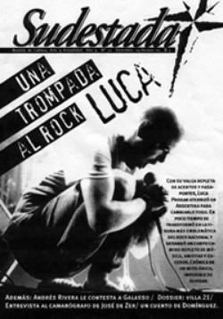

Buscar
Censurado
Edición N° 35
Diciembre 2004
Revista bimensual
Comprar edición impresaSumario
- Luca Prodan: Una trompada al rock
- Censurado
- "Seguime, Chango, seguime"
- "La Izquierda Nacional tiene el escriba que se merece"
- Cuando el teatro se ríe de la televisión
- Puertas adentro: La Villa 21 en imágenes
Compartir Articulo
Dos visiones del periodismo conviven en la misma realidad, dos formas de hacer y de ver la prensa. El primero de esos mundos (el que tiene empleo en medios comerciales, el que vive de la publicidad oficial) hoy debate, con simulada sorpresa, el dilema de la censura. Difícil distinguir la delgada frontera entre los límites que el sistema le impone al trabajador de prensa y la autocensura que el propio periodista se marca para conservar su puesto. Con un tremendo colchón de desocupados en el sector, hoy los periodistas llegan a aceptar condiciones de trabajo inéditas como consecuencia del despido de compañeros especializados. Este ajuste que casi siempre comienza desde lo laboral, conlleva un condicionamiento ideológico, o sea una manera de censura. A pesar de haber dejado lejos los años del terrorismo de Estado es innegable afirmar que parte de la herencia de aquellos años todavía persiste en forma de selección ideológicamente correcta de la información. Es más, quizá el resabio más complicado de extirpar en el periodismo es el que continúa aún gravitando en las redacciones: el trauma de la autocensura. Ésta comienza sin duda en la noción, arraigada en los periodistas desde las universidades y escuelas, de la competencia entre pares y en la posibilidad del ascenso social como prioridad.
Pero hay otro universo paralelo en la prensa, el que no espera las oportunidades sino que las sale a buscar, el que no sueña con publicar lo que le dejen (cualquier cosa, lo que sea) en los medios del establishment sino que apuesta por ofrecer otro mensaje, reflejar la versión de los otros, los olvidados. Están los que se resignan a vivir bajo el dedo de un editor y protestan, y están los que van a buscar su camino y construyen, y transforman, y crecen, y padecen también. En este contexto, la censura actúa también desde la supuesta libertad de mercado. Este postulado estipula que hoy cualquier persona tiene la libertad de ejercer su libertad de prensa y de información. Nada más falso. Lo que la libertad de mercado otorga es la libertad que tienen un par de personas para seleccionar lo que va y lo que no va. ¿Qué pasa con los periodistas que no pueden (o no quieren) trabajar en alguno de los pocos multimedios que dominan el mercado?; ¿qué pasa con uno si logra formar un proyecto independiente y quiere imprimirlo, distribuirlo, comercializarlo sin caer en las dos o tres distribuidoras de diarios y revistas?; ¿se resigna? ¿Se queja o sale a buscar?
En los últimos días se conoció la denuncia del periodista de Página/12, Julio Nudler, en relación a un artículo que contaba algunos hechos de corrupción de funcionarios nacionales. La actitud de los medios comerciales es por todos conocida, siempre actúan en base a acuerdos comerciales o políticos. Pero... ¿y el tipo que denuncia censura en su lugar de trabajo?, ¿qué hace? La voluntad y la conciencia de cada uno dicta la decisión final, pero siempre es mejor alejarse del sometimiento y buscar nuevos caminos, que protestar en otros medios (donde la censura también se repite todos los días) buscando el impacto.
La censura es una vieja compañera de las redacciones de los grandes medios argentinos, la autocensura también. Los mercenarios que censuran, y los pobres tipos que son censurados, debaten en su propio universo. Pero hay otra realidad. Hay otro mundo donde el silencio conveniente se combate con palabras, donde lo instituido se rebate con una alternativa, y donde la verdad de los poderosos, esa que sale todos los días en los diarios, sólo se utiliza para envolver la verdura.
Comentarios

Sudestada
El colectivo de Revista Sudestada esta integrado por Ignacio Portela, Hugo Montero, Walter Marini, Leandro Albani, Martín Latorraca, Pablo Fernández y Repo Bandini.
Articulos más vistos


LIBRERÍA SUDESTADA

Colección infantil

Distribuidora de Libros

Suscripción

Sudestada en URUGUAY

Otros articulos de esta edición
"Seguime, Chango, seguime"
Entrevista con Carlos Chango Torres, el camarógrafo de José de Zer. Rastreando alienígenas, zafando de pozos magnéticos o persiguiendo falsos ...
Puertas adentro: La Villa 21 en imágenes
Entre sus pasillos, se tejen las historias de un grupo de personas que trabajan todos los días para quienes menos ...
 Nota de tapa
Nota de tapa
Luca Prodan: Una trompada al rock
No habrá ninguno igual, seguro. No habrá ninguno como Luca Prodan, ese escapado de todos lados que un día se ...
"La Izquierda Nacional tiene el escriba que se merece"
Resumen de lo publicado (Las raíces de un debate profundo como el que hoy protagonizan el escritor Andrés Rivera y ...
 Teatro
Teatro
Cuando el teatro se ríe de la televisión
Sus primeras presentaciones fueron en pubs, y con los años, entre premios y giras por todo el país, llegaron a ...